Tutorial
Track your website with Umami Cloud
Learn how to use Umami step by step: create an account, add a website, connect it, and read page views, button clicks and campaign links in your dashboard. We use our Paisley Christmas Market page as the example, but you can follow along with any website of your own.
Before you start
What you will do: connect a website to Umami Cloud and answer three questions from the dashboard: how many people visited, which button was clicked most, and which link brought visitors in.
- A web browser (Chrome, Edge, Safari or Firefox).
- VS Code with the Live Server extension installed (search for "Live Server" in the Extensions panel).
- An email address to sign up for Umami Cloud (the free plan is enough).
1Create an Umami Cloud account
Go to umami.is and click Sign up. Register with your email address and log in (Umami Software, n.d.h).
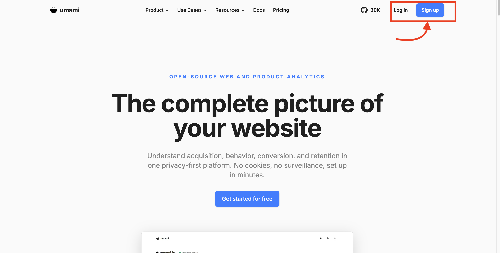
2Add your website
After logging in, click Websites in the left menu, then click + Add website.
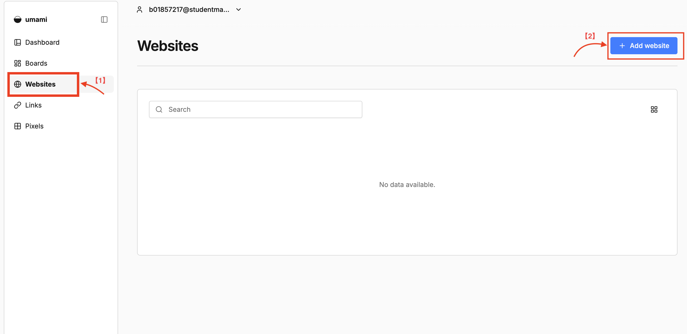
Fill in the form:
- Name: any name you will recognise, for example
Paisley Christmas Market. - Domain: where the site runs. We test on our own computer, so type
localhost. For a site on GitHub Pages it would beyourname.github.io.
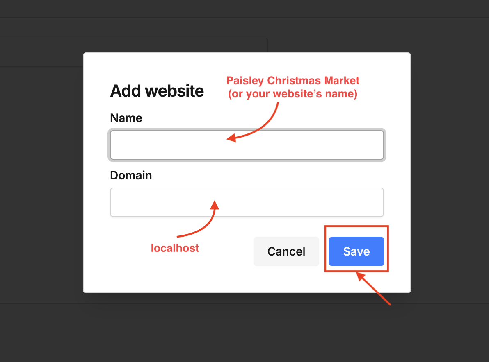
http://, no port number and no file path.Click Save.
3Copy the tracking code
After saving, Umami shows the Tracking code for your website. It is one <script> tag with two important parts:
src: the address of the Umami tracker script.data-website-id: the ID that links your pages to this dashboard.
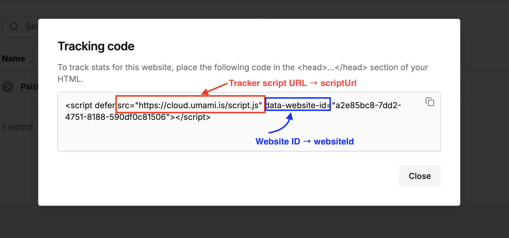
If you close this window, you can find the code again: on the Websites page, click the edit (pencil) icon next to your site. Clicking the website name opens its dashboard.
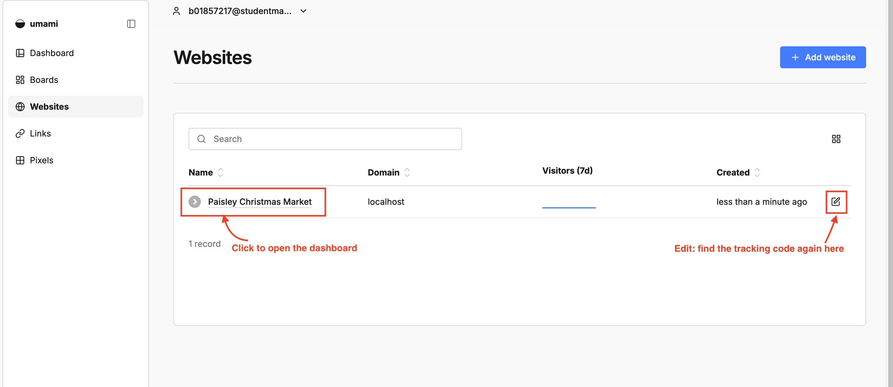
4Get a website to track
You can use any website of your own. If you do not have one, download ours:
Download our demo website (.zip)
Unzip it and open the folder in VS Code. It contains index.html, styles.css, app.js and umami-config.js. Analytics is switched off until you add your own details in the next step.
5Connect the website to Umami
Using our demo website: open umami-config.js and paste the two values from your tracking code, then save (Ctrl+S or Cmd+S):
window.PAISLEY_UMAMI = {
scriptUrl: 'https://cloud.umami.is/script.js',
websiteId: 'YOUR-WEBSITE-ID'
};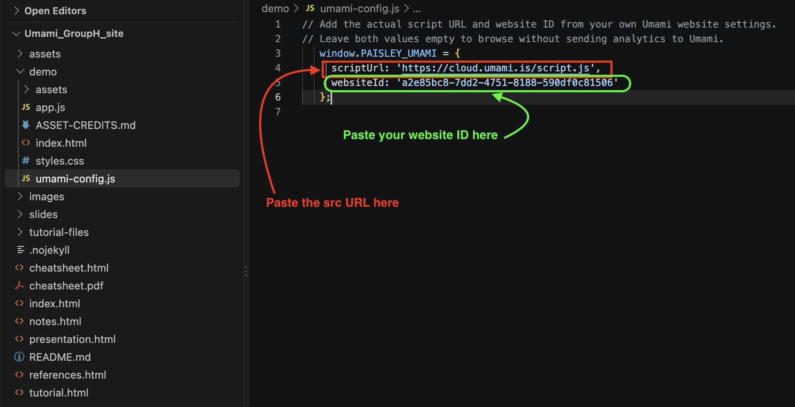
src URL into scriptUrl and the ID inside the quotes after data-website-id into websiteId.Using your own website: paste the whole tracking code inside the <head> of every page (Umami Software, n.d.a):
<head> ... <script defer src="https://cloud.umami.is/script.js" data-website-id="YOUR-WEBSITE-ID"></script> </head>
6Open the website on localhost
The tracker needs the page to be served over http://. Double-clicking the file opens it as file://, and nothing is recorded. In VS Code, right-click index.html and choose Open with Live Server.
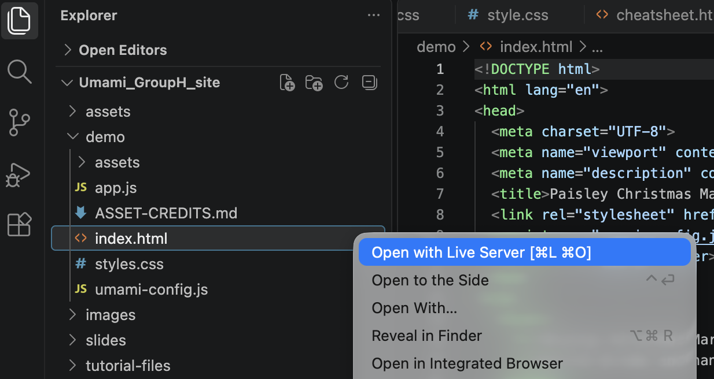
index.html → Open with Live Server.Live Server may open 127.0.0.1:5500. This is the same computer as localhost; you can change the address bar to localhost:5500 so it matches the domain you entered.
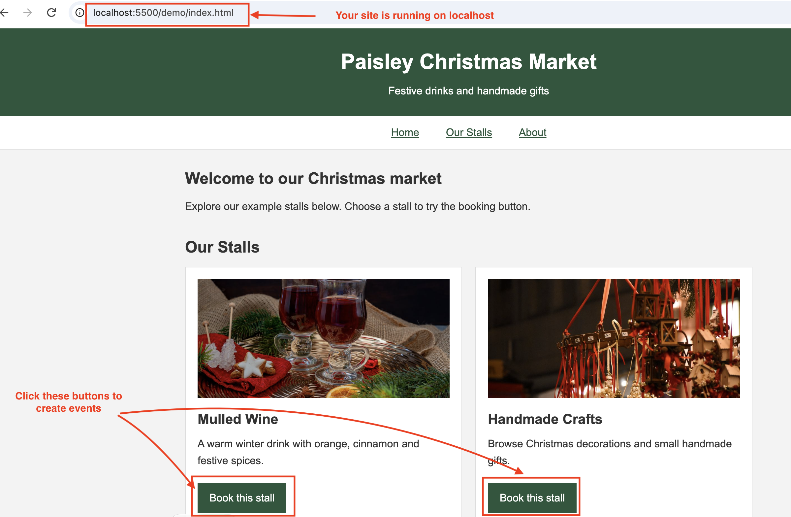
7Check page views
Click around the website for a moment. Then, in Umami, go to Websites and click your website's name to open the Overview.
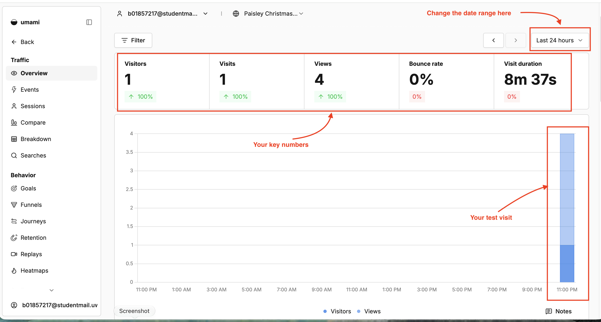
| Metric | Meaning |
|---|---|
| Visitors | Unique visitors, estimated with a monthly hash instead of a cookie |
| Visits | A new visit starts after 30 minutes without activity |
| Views | Pages loaded |
| Bounce rate | Visits that viewed only one page |
| Visit duration | Time from the first to the last action in a visit |
Source: Umami Software (n.d.f).
The Overview shows at least 1 visitor and 1 view. If it shows 0, wait a minute, refresh, and check the date range in the top right.
8Track button clicks
Page views do not tell us which stall people are interested in. In our demo, each button already has two extra attributes (Umami Software, n.d.g):
<button data-umami-event="Book stall" data-umami-event-stall="mulled-wine">Book this stall</button> <button data-umami-event="Book stall" data-umami-event-stall="crafts">Book this stall</button>
| Attribute | Meaning |
|---|---|
data-umami-event="Book stall" | The event name, recorded each time the button is clicked |
data-umami-event-stall="..." | A property called stall, so we can tell the buttons apart |
On your own site, add the same attributes to any button or link you want to count. Click each button a few times, then open Events in the left menu of your website dashboard.
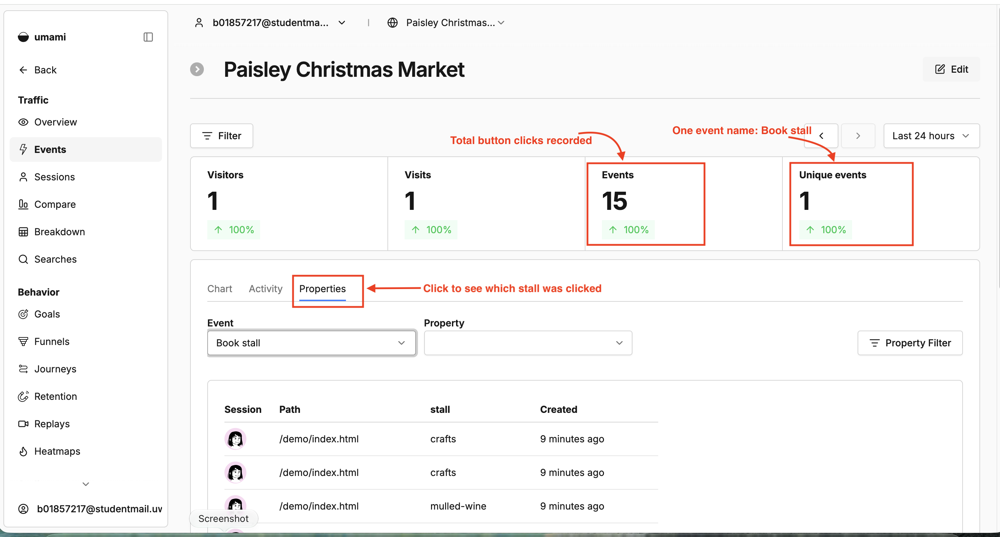
stall value.To compare the stalls, choose stall in the Property box.
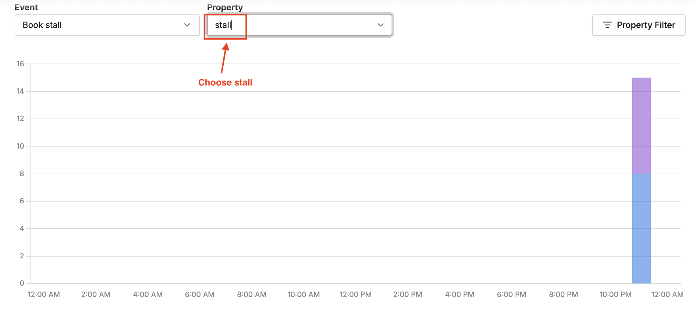
stall property.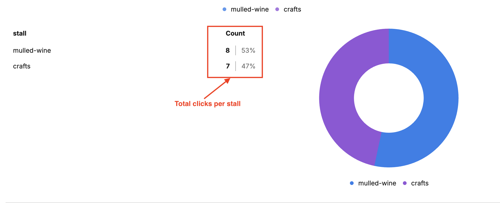
The Events page lists Book stall, and the stall property shows a count for each button you clicked.
9Track a campaign link (UTM)
UTM tags are labels added to the end of a link. They tell Umami where a visitor came from, without changing the page. For example, the market could print this link on a poster:
http://localhost:5500/index.html?utm_source=poster&utm_campaign=xmas
utm_source: where the visitor came from (poster, instagram, email).utm_campaign: which campaign (xmas).
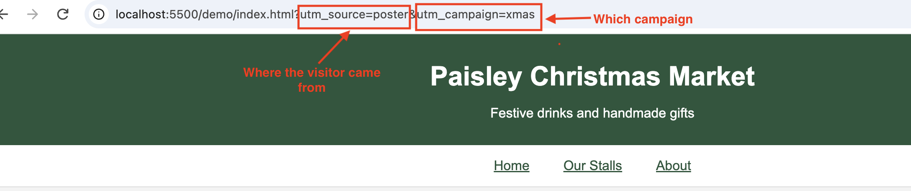
In Umami, scroll down the left menu and open Growth → UTM.
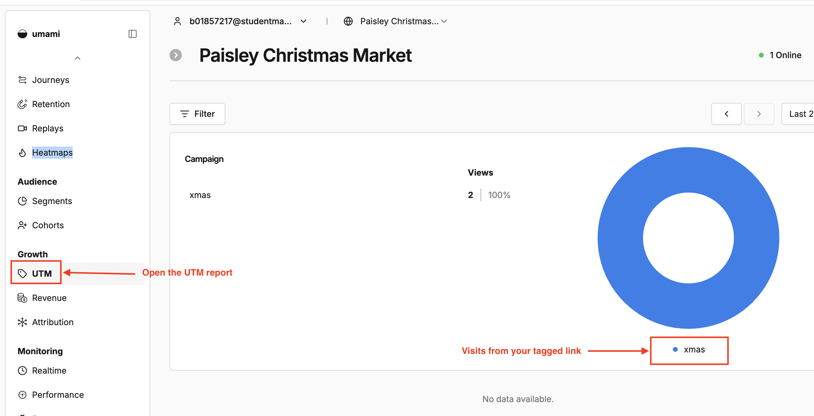
The UTM report shows the xmas campaign. Try another link with utm_source=instagram and compare.
Troubleshooting
| Problem | Fix |
|---|---|
| Invalid domain. Do not include http/https. | Type only the host name in Domain, for example localhost. Do not include http://, a port such as :5500, or a file path. Umami does not accept 127.0.0.1. |
| Dashboard shows no data | Check the website ID matches your dashboard; open the page with Live Server (not file://); turn off ad blockers for this site; make sure the date range includes today. |
| Page views work but no events | Check the spelling of data-umami-event, save the file, and hard-refresh the page (Ctrl+F5 or Cmd+Shift+R). |
| "Open with Live Server" is missing | Install the Live Server extension in VS Code, then restart VS Code. |
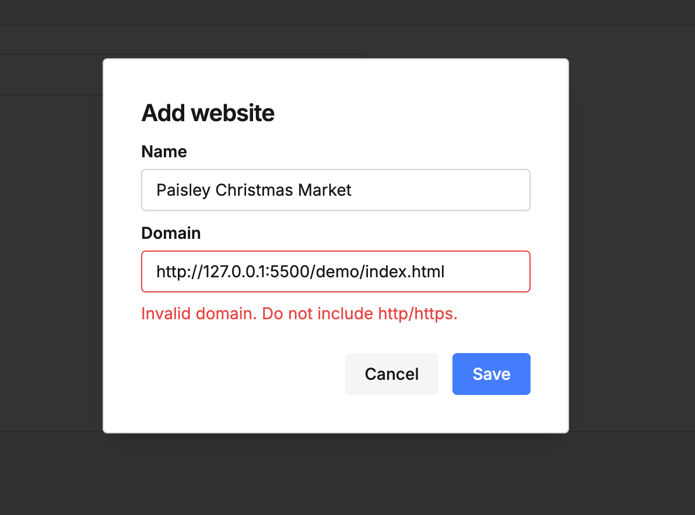